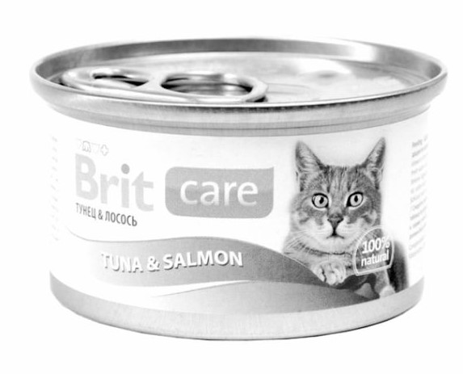
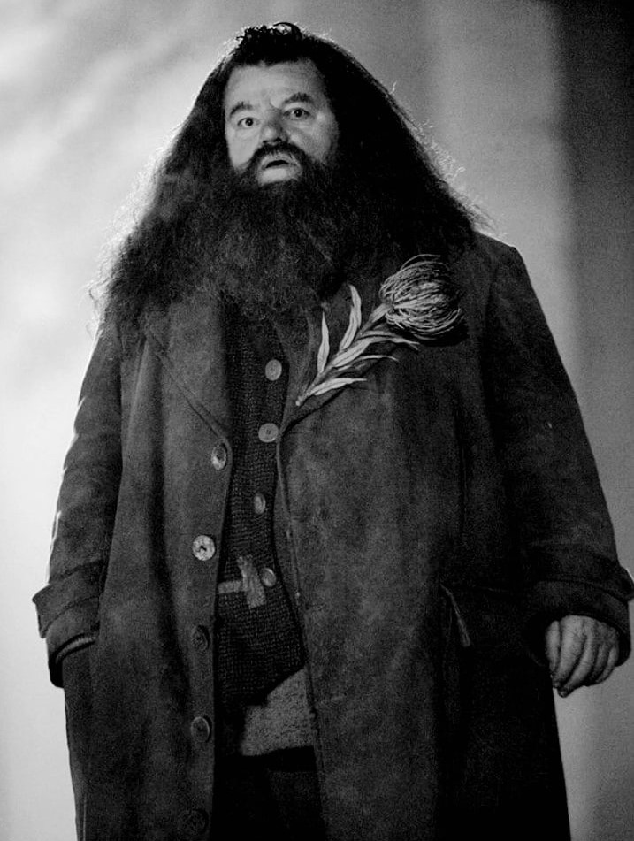

По стопам Мародёров 2.0
Весь Хогвартс ещё долго не мог отойти от выходок знаменитых Мародёров (Джеймс Поттер, Сириус Блек, Римус Люпин, Питер Петтигрю). Только все успели расслабиться, привыкнуть к спокойной жизни, как на стул распределяющей шляпы поочереди сели близнецы Фред и Джордж Уизли. Все ожидали, что они будут такими же ответственными, спокойными и старательными учениками, как их старшие братья. Но всё хорошее должно когда-нибудь заканчиваться. Оказалось, что эти двое могли нанести своими розыгрышами школе больший урон, чем Мародёры за всё время своего обучения. Очередная выходка близнецов стоила им 500 штрафных баллов и месячной отработки.
А если поподробнее, то эти двое смогли не только стащить у Слизнорта 3 пузырька сыворотки правды, но и незаметно подлить её в графин с тыквенным соком на преподавательском столе. Сказать, что студенты узнали много чего нового совсем не по теме занятий, это очень мягко сказано.
Все знают, что анимагической формой профессора МакГонагалл является полосатая кошка. Но никто не догадывался, о её тайном пристрастии к маггловским кошачьим консервам. Также она уточнила, что с запахом лосося ей нравятся больше всего, она намазывает их на тосты. Неудивительно, что в придачу к ставшей уже традиционной корзинки с котятами и запиской "Здравствуй, мама!" она получит ящик консерв. И не факт, что только от близнецов и только один раз.
Профессора говорили, что им иногда нравятся шутки и розыгрыши, но из-за статуса преподавателя им нужно вести себя строго. А Снейп даже сказал, что если бы близнецы учились на Слизерине, то он бы их прикрывал и иногда даже подавал новые идеи, чтобы проучить Дамблдора.
Дамблдор же признался, что всегда предлагает людям лимонные дольки когда те нервничают, незнают что сказать, да и вообще всегда и всем их суёт. А делает он это из-за того, что когда-то давно они ему сильно понравились и он заказал пожизненную ежедневную доставку этих сладостей. Теперь, ему надо вечно выкручиваться, чтобы его стратегический запас не испортился.
Декан Когтеврана поразил всех, своей любовью к Серой Даме (призрак Елены Когтевран). И тем, что он уже много лет ищет способ присоединиться к ней в виде привидения.
Повезло наверное только Хагриду. Студенты ещё со времён Турнира Трёх Волшебников заметили его симпатию к директору Шармбатора Мадам Максим. Но когда полувеликан прямо на занятии пустил слезу, сказав что она отвергла его, так как он совершенно не подходит ей ни манерами ни образованием, несколько студенток Пуффендуя обещали Хагриду помочь с этой проблемой. От такого тот совсем растрогался и ему пришлось отпускать всех с занятия на 30 минут раньше.
Всё хорошее когда-нибудь заканчивается. К концу дня некоторые студенты были в таком шоке от откравений преподавателей, что в срочном порядке искали тех, кто способен наложить Обливиэйт. А сами зачинщики уже расслабились и думали, что шалость удалась прекрасно, но были пойманы Северусом Снейпом, который, заподозрив неладное, проверил склад с зельями и обнаружил пропажу. Без суда и следствия оба гриффиндорца были оштрафованы на 250 баллов каждый. Это был только понедельник... Кто знает, может к концу недели братья и вовсе установят абсолютный рекорд снятия баллов, который уже никто не сможет побить.